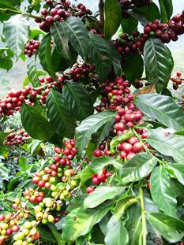
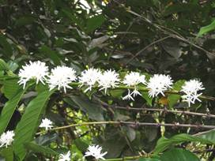
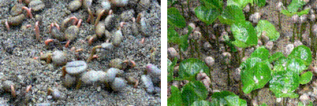
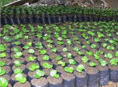
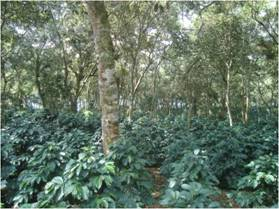
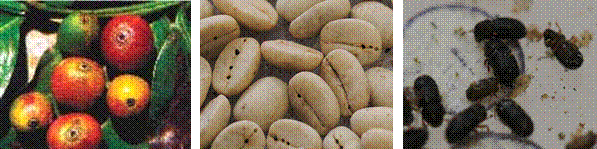
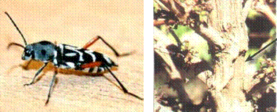
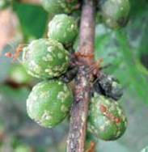
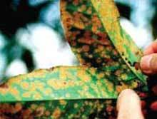
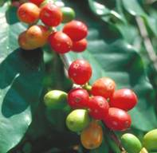

HORT 282 :: Lecture 19 :: COFFEE

COFFEE
(Coffea arabica and C.canephora, Rubiaceae)
 Coffee, native of Ethiopia, was introduced into India sometime during 1600 AD by a Muslim pilgrim, Baba Budan on the hills near Chikmangalur. Coffee seedlings were then planted in the backyards and it was not until the late 1820 s that commercial plantations were started in South India by British entrepreneurs. Now coffee cultivation is mainly confined to the States of Karnataka, Kerala, Tamilnadu ND Andhra Pradesh and on a limited scale to Arunachala Pradesh, Assam, Madhya Pradesh, Manipur, Meghalayaa, Mizoram, Nagaland, Orissa, Sikkim, Tirupura and West Bengal. The present area under coffee is 2,43,117 hectares of which arabica accounts for 49.41 % and robusta 50.59 % with a total production of about 1,75,000 tonnes . About 60 % is exported annually earning around Rs. 300 crores and rest consumed internally. There are 99,000 registered growers of whom 97.13% are small growers with 10 hectares and below. This plantation employs about 3, 71,655 workers.
Botany:
Though the genus coffea consists of about 70 species, only 3 species are of economic importance. They are 1) C. arabica (Arabica coffee), 2) C. canephora (Robusta coffee) and 3) C. liberica (Tree coffee). The first two species are extensively cultivated. The important differences among these two species are:
CHARACTER |
C. arabica |
C. canephora |
1. Ploidy |
Tetraploid (2n=44) |
Diploid (2n=22) |
2. Adaptability |
Higher elevation |
lower elevation |
3. Plant status |
A small tree, a shrub or a bush under training. |
A bigger tree than arabica. |
4. Leaves |
Dark green |
Pale green |
5. Blossoming |
Bloom in 9-10 days after the receipt of blossom showers. |
Bloom in 7 days after the receipt of blossom showers. |
6. Flowers |
Scaly, small bracts, per axil 4-5 inflorescence of 1-4 flowers per inflorescence. |
Leafy and expanded bracts with 5 to 6 flowers per inflorescence. |
7. Berries |
10-20 per node oblong to round in shape. |
40-60 or more per node, small. |
8. Fruit development |
8-9 months |
10-11months |
9. Root system |
Small but deep. |
Large but shallow |
10. Pollination |
Self pollinated & Self fertile. |
Cross pollinated & Self –sterile. |

The coffee plant has a prominent vertical stem with horizontal primary branches arising from it in pairs opposite to each other. Another upright shoot, sucker, arises from the main stem especially in a matured coffee plant in between the primary lateral branch and the leaf or its suar. It grows vertically like the main stem. These primary branches give rise to laterals which in turn produce tertiary and quartenary branches. The secondary and tertiary types arise towards the distal end of the branch just above the axil and the other type known as axillary bud which grows in the leaf axil and is capable of growing into a flower cluster or a lateral shoot. The axillary bud provides the main cropping wood for the plant.
Coffee is a short day plant and is South India, flower initiation takes place between September to March. The flower buds grow into a definite size under fairly cold winter conditions and undergo a period of dormancy due to the onset of drought coupled with high temperature, long day and high light intensity conditions prevailing in dry months (November to march) depending upon the places. There is practically no vegetative growth during these dry months. Immediately after the blossom showers, growth changes are conspicuous in flower buds on the third day following rains due to the moistening of the flower buds, soil wetness and low temperature that follows immediately after rain. This causes the plants to blossom within 7 to 10 days. This imposed dormancy is a necessary event, as it enable single harvest , otherwise, coffee will be blooming through out the year resulting in staggered harvesting concomitant with increased cost of picking , etc. The fruit is a drupe and normally contains two seeds. Abortion of one ovule due to non- fertilization leads to the formation of a single seeded fruit, called pea berry . Sometimes , 3 or more seeds may be present due to trilocular ovaries or false polyembryony and is often called triangular seeds. Occasionally, formation of more than one ovule per locule is seen and such seeds are known as elephant bean.
Climate and Soil
Climatological factors like rainfall, temperature, elevation and aspect can influence economic production of coffee much more than soil factors. Soil should be deep, well drained, slightly acidic in reaction and rich in organic matter content.
The optimum soil and climate requirements for arabica and robusta under south Indian conditions are as follows.
Particulars |
Arabica |
Robusta |
1. Elevation |
1000-1500m MSL |
500-1000 m MSL |
2. Annualrainfall |
1600-2500mm |
1000-2000mm |
3. Bloosom rain |
March-April |
February - March |
4. Backing rain |
April- May |
April- May |
5. Shade |
Needs medium to light shade depending on elevations & aspects. |
Needs uniform thin shade. |
6.Temperature |
15- 25OC |
20-30 C |
7. Relative humidity |
70-80% |
80-90% |
8. Soil |
Deep friable, porous, rich in organic matter moisture retentive, slightly acidic Ph 6-6.5 |
Same as for Arabica. |
9. Aspect. |
Northern , Eastern and N. Eastern aspects are ideal |
Flat to gentle slopes |
10. Slope of the field |
A gentle to moderate slope is ideal. |
Gentle slopes to fairly level are to be preferred |
Varieties
Variety |
Parentage |
Special Chracters |
S.795 (Sln. 3) |
S.288 x Kent |
Resistant to leaf rust race 1 and 11 |
Sln.7 |
San Ramon short internode arabica spotted in Costa Rica |
Dwarf in nature, but segregates to tall by 30% |
Sln. 8 |
A spontaneous hybrid of robusta– arabica, spotted in portugese timor island |
Highest vertical resistant to leaf rust |
Sln.9 |
Sln. 8 x Tafarikela |
Drought hardy, suitable to different coffee zones |
Sln.10 (Catura crosses) |
Catura x S.795 or Sln.8 |
Drought hardy, suitable to different coffee zones |
Nursery
Healthy and mature fruits of normal sizes and appearance, three squatters to fully ripe are harvested from specially selected and marked coffee plants for uses as seed bearers. Floats are discarded, the sound fruits are pulped, the beans drained and sieved to remove defective beans. The beans are then mixed with sieved wood – ash , evenly spread out to a thickness of about 5 cm and allowed to dry to facilitate uniform drying. Excess ash is rubbed - off after five days of drying.
Germination beds raised to a height of about 15 cm, one metre width and of convenient length are prepared, Four baskets of fully mature cattle manure or compost, about 2 kg of finely sieved agricultural lime and 400 g of rock phosphate are incorporated in a bed measuring 1mX 6m.
Seeds should be sown with the flat side facing the soil at a distance of 1.5 to 2.5 cm from one another in regular rows. A thin layer of fine soil is then spread. The bed is covered with a layer of about 5 cm of paddy straw. The beds are watered daily and protected from direct sunlight by and overhead pandal constructed for this purpose. The seeds germinate in about 45 days. The seedlings are then transplanted to secondary nursery beds or raising polybag plants.

Coffee seedlings are transplanted to polythene bags of 23 cm X 5 cm with 150 gauge thick in February or March when they are at the bottom or topee stage. The bags are filled with a prepared mixture of 6 parts of jungle soil, 2 parts of well rotten sieved cattle manure and 1 part of fine sand.

At the time of transplanting it is preferable to slightly nip the tap root of the seedling. Transplanting is done preferably in the early morning hours or late in the afternoon.
Regular watering and after-care of the seedlings should follow. Seedlings may be manured once in 2 months with urea dissolved in water, 20 g urea in 4.5 litres of water is sufficient for an area of 1 square metre. Adequate protection is given against nursery diseases and pests. Overhead shade in the nursery has to be thinned and finally removed after the onsets of monsoon.
Preparation of land
Clean felling is not advocated. Selective retention of desired species of wild shade trees is essential. The land should be divided into blocks of convenient sizes with foot path and roads laid out in between. In steepy area, terracing and contour planting may also be adopted.
Spacing for arabica and robusta coffee is 1.5 to 2.0m and 2.5m either way respectively and 1mX1m for dwarf variety Sanraman. A close planting at 1-1.5 m either way and reduce the population by half after one or two harvests is good. Pits of 45 cm, are usually opened after the first few summer shower and seedlings of 16 to 18 months old are planted during June or September – October. A hole is made in the center of the pit after leveling the soil. The seedlings is placed in the hole with its tap root and lateral roots spread out in proper position. The hole is then filled. The soil around the seedling is packed firmly and evenly in such a way that 3 cm high above the ground to prevent stagnation of water around the collar. The seedlings are provided with cross stakes to prevent wind damage.
Training and pruning
Training of the bush is necessary to have a strong frame work which promotes production of bearing wood.
Coffee is trained in two systems viz
- Single stem system
When the plant reaches a height of 75 cm in Arabica or 110 to 120 cm in robusta, lit is topped. This helps to restrict vertical growth, facilitate lateral spreading and increase the bearing area. In this system, a second tier is also allowed sometimes depending upon the soil fertility and plant’ s vigour.
- Multiple stem system
It is common in Kenya, Tanzania, is not practiced in India. Pruning in coffee is generally done immediately after harvest and till the onset of monsoon. It is essentially a thinning process and is done mainly to divert the vigour of the plants to certain parts by pruning the other parts. Pruning involves a) Centering b) Desuckering c) Handling
Soil Management
Soil management practices aim at conserving soil and water and in general to make the soil perform its functions satisfactorily. It includes the following practices in coffee.
- Digging: In the new clearing, the field is given a thorough digging to a depth of about 35-45 cm towards the end of the monsoon. All weeds and vegetative debris are completely turned under and buried in the soil while the stumps are removed. Once the coffee plants have closed in, annual digging is not done.
- Scuffling or Soil stirring: In established coffee fields, scuffling or soil stirring is done towards the beginning of the dry period . It controls weeds and also conserves soil moisture.
c) Mulching: Mulching young coffee clearings helps to maintain optimum soil temperature and conserve soil moisture and acts as an effective erosion control measure . Mulching also adds to fertility of the soil.
d) Trenching: Trenches and pits are dug or renovated in a staggered manner between rows of coffee along the contour during August-October when the soil is fairly easy to work. These are 50 cm wide and 25 cm deep and can be of any convenient length.
e) Weed control: New clearings are hand – weeded three to four times a year and established coffee two to three times. During the monsoon, the weeds are slashed back. Another weeding is done towards the end of the monsoon. Clean weeding is generally done during the post monsoon period. Chemical weedicides have gained popularity in larger plantations. Grammaxone at 1.25 lit in 450 lit of water peer hectare has been found to the best. This should follow weeded plots after 10-15 days.
f) Irrigation: Springer irrigation is mainly used as an insurance against failure of good blossom or backing showers.
g) Soil acidity and liming: The heavy rainfall in coffee growing zones of South India brings about leaching in calcium and magnesium leading to soil acidity. Besides, continuous use of acid forming fertilizers like ammonium sulphate also makes the soil acidic. Agricultural lime and dolomite lime are the most commonly used liming materials.
Shade and its management
- Under the climatic conditions existing in India. Coffee is being cultivated under shade. It comprises of two canopies lower or temporary and upper or permanent.
- Dadap is used as a lower canopy shade in India. Next to dadap, silver oak is the most commonly used tree for temporary shade.
- The most popular permanent shade trees found in south India. Albizzia lebbec, A.odoratissima, A.moluccana, Artocarpus integrifolia, etc., Permanent shade trees are generally planted about 12 to 14 m apart. The most convenient time to regulate shade is after pruning and liming.

Manuring
Coffee plants produce every year fresh wood for the succeeding crop concomitant with the function of maturing the current berries. Hence, they require a regular supply of nutrients. Besides, being grown in heavy rainfall area, the losses of nutrients due to leaching and fixation are to be offset by regular application of adequate quantities of fertilizers.
As a supplement to soil applications of fertilizers, foliar spraying with (Urea 0.5 kg, Ammophos (20:20) 0.5 kg and muriate of potash 350 g dissolved in 200 lit of water or Bordeaux mixture may be given) during periods of slow growth, flowering and fruit setting . However, Bordeaux mixture should be neutralized properly before dissolving the nutrients.
Manurial recommendation for coffee:
|
Pre blossom (March) |
Post blossom, |
Mid monsoon |
Post monsoon (October) |
Total |
Arabica |
|
|
|
|
|
1st year |
15:10:15 |
15:10:15 |
-- |
15:10:15 |
45:30:45 |
2nd and 3rd year |
20:15:20 |
20:15:20 |
-- |
20:15:20 |
60:45:60 |
4th year |
30:20:30 |
30:20:30 |
-- |
30:20:30 |
80:60:80 |
Bearing coffee 5 years and above: for less than 1 t/ha crop |
40:30:40 |
40:30:40 |
20:0:0 |
40:30:40 |
140:90:120 |
For 1 t/ha and above |
40:30:40 |
40:30:40 |
40:30:40 |
40:30:40 |
160:120:160 |
Robusta |
|
|
|
|
|
For less than 1t/ha crop |
40:30:40 |
-- |
-- |
40:30:40 |
80:60:80 |
For 1 t/ha and above |
40:30:40 |
40:30:40 |
-- |
40:30:40 |
120:90:120 |
Pest Management
Coffee berry borer (Hypothenemus hampei)
Coffee berry borer is the most serious pest of coffee world over. The female beetle bores into the berries through the navel region and makes tunnels in the hard bean and lays about 15 eggs. The larvae feed on the beans, making small tunnels. A typical pinhole at the tip of the berries indicates the presence of the pest, and it damages young as well as ripe berries. In case of severe infestation, 30 to 80% berries may be affected resulting in heavy crop loss. The coffee berry borer can be controlled by the following methods.

a. Cultural
Timely and complete harvest, collection of gleanings, burying the infested berries and maintaining optimum shade and good drainage can control the pest.
b. Chemical
Spraying endosulfan 35 EC 340 ml in 200 litres of water along with 200 ml of wetting agent 120-150 days after flowering (Aug-Sept, for arabica and Sept-Oct. for robusta) can control the pest.
White stem borer (Xylotrechus quadripes)
Plants show unhealthy symptoms like wilting and yellowing of leaves. As the beetles are active and females lay eggs in the crevices on the main stem of coffee, major efforts to control initial laying of eggs itself is aimed at by swabbing the main stem and the thick primaries with carbaryl 50 WP @ 4 kg in 200 litres of water once or twice (depending upon the severity of the incidence) in April-May or October to December. Apart from this, it is necessary to build up good shade and regularly trace, uproot stump and burn the infested plants. Storing of cut stems is not advisable, as it will advance the flight period.

Shot hole borer (Xylosandrus compactus)
Attacked plants dry up, extensive tunneling within the branches seen. This is a major pest in robusta coffee affecting the secondary and tertiary branches causing considerable damage. Injury to the coffee plants is primarily by the extensive tunneling within the branches, which limits the flow of sap. The affected branches dry up. The presence of withering and dead branches with shot holes is the symptom of attack.
Control
1. Prune the affected twigs 5-8 cm beyond the shot hole and burn. This operation should commence from September onwards, as soon as the first symptom of attack like dropping of leaves is noticed, and continued as a routine measure at regular intervals.
2. The pest prefers to breed in the suckers during dry period. So remove and destroy all the unwanted / infested suckers during summer.
Mealy bugs (Planococcus sp.)
Mealy bugs damage coffee plants by sucking the sap from the tender branches, nodes, leaves, spikes, berries and roots leading to the debilitation of the plant. In case of root infestation, plants (especially young) become weak, leading to death.
Control
The mealy bug can be controlled by spraying any of the following three insecticides viz. Quinalphos, Fenthion or Fenitrothion. In addition to the above method, the biological control agents like Cryptolaemus montrouzieri (ladybird beetle) and the parasitoid Leptomastix dactylopii have been found effective. Indirect control of the disease can be made by controlling the ants, which spread the infestation.
Green scale (Coccus viridis)
The green scale is a serious sucking pest of coffee particularly arabica.
Control
The chemical control measures include spraying the affected patches with any one of the following insecticides viz. Cythion 50 EC @ 200 ml, Quinalphos 25 EC @ 120 ml, Fenitrothion 50 EC @ 100 ml, Fenthion 1000 @ 80 ml, Methyl parathion 50 EC @ 120 ml or Dimethoate 30 EC @ 170 ml.(Source: Central Coffee Research Institute, Balehonnur, Chikmagalur Dt., Karnataka)

Disease Management
Leaf rust (Hemileia vastatrix)
This is an important disease causing economic loss particularly in arabica coffee. On the lower surface of the infected leaves, small pale yellowish spots appear early after the first rains in the season. These spots soon increase in size and number, and many such spots coalesce at severity causing premature defoliation. Severe defoliation leads to debilitation of the bushes and results in poor cropping in the succeeding seasons.
Control
Spray susceptible coffee with 0.5% Bordeaux mixture or 0.03% ai Plantvax 20 EC 3-4 times a year: Bordeaux mixture 0.5% in February-March as pre- or post-blossom spray, Plantvax 20 EC 0.03% ai in May-June as pre-monsoon spray, Plantvax 20 EC 0.03% ai or Bordeaux mixture 0.5% in July-August in mid-monsoon spray (if incidence of leaf rust is severe), and Plantvax 20 EC 0.03% ai or Bordeaux mixture 0.5% in September-October as post-monsoon spray.
Black rot (Koleroga noxia)
A disease more in occurrence in endemic areas with heavy rainfall, saturated atmosphere with 95-100% RH, thick overhead shade, low over-hanging branches, sheltered from sunlight and wind in valleys or continuous mist during monsoon. The affected bushes have blackening and rotting of leaves, twig and developing berries. There will be defoliation and berry drop in the affected branches. The entire block affected looks totally debilitated with heavy damage to crop.
Control
Centering and handling of the bushes prior to the onset of monsoon and protecting endemic patches with spraying Bordeaux mixture 1%. If incidence is observed during the monsoon, remove the affected twigs and burn them. Spray with Bordeaux mixture 1% during break in the monsoon.
Brown blight, twig blight dieback (Colletotrichum glosporioides)
Small water soaked lesions on margins of leaves and slowly extended causing drying of margins with shedding of berries. Prune badly affected plants during dry months, spray 0.5% Bordeaux mixture.
Harvesting
Coffee fruits should be picked as and when they become ripe to get better quality. Arabica comes for harvesting earlier since they take 8-9 months for fruit development from flowering while robusta takes 10-11 months. Picking is done by hand. The first picking consists of selective picking of ripe berries often seen in the outer portion of the node and is called fly picking. Thereafter, there will be 4-6 main pickings at 10-15 days intervals and final harvest. Stripping consists of picking of still remaining green berries on the plant.

Processing of Coffee
Coffee is processed in two ways a) wet processing to prepare plantation or parchment coffee and b) dry method by which cherry coffee is prepared.
I. Preparation of parchment coffee:
1). Pulping
This method requires equipment and adequate supply of clean water. Fruits should be pulped on the same day to avoid fermentation before pulping. Fruits may be fed to the pulper through siphon arrangement to ensure uniform feeding and to separate lights and floats from sound fruits. The pulped parchment should be sieved to eliminate any unpulped fruits and fruits skin. The skins are separated by pulping should be let away from the vats into collection pits so that microbial decomposition of the skin will not affect the bean quality when it gets mixed up with the bean.
2) Demucilaging and washing
The mucilage on the parchment skin can be removed by
A) Natural fermentation
The mucilage breaks down in the process of fermentation and it takes 24-36 hours for arabica and 72 hours for robusta. Cool weather delays the process of fermentation. Under fermented or over fermented beans affect quality. When correctly fermented the mucilage comes off easily and the parchment does not stick to the hand after washing and the beans feel rough and gritty when squeezed by hand. When the mucilage breakdown is complete, clean water is let in and the parchment washed pebble clean with three to four changes of water.
B) Treatment with alkali
Removal of mucilage by treatment with alkali takes about one hour for arabica and one and a half to two hours for robusta. The beans obtained after pulping are drained off excess water and spread out in the wax uniformly and furrowed with wooden ladles with a long handles. A 10% solution of caustic soda (NaOH) is evenly applied into the furrows using a water can.10 litres of alkali is sufficient to treat 25-30 forlits (1 forlit = 40 litres) of parchment. The parchment is agitated thoroughly by the ladles so as to make the alkali to come into contact with the parchment and trampled by feet for about half an hour. When the parchment is no longer slimy and makes a rattling noise, clean water is let in and the parchment washed clean with 3 or 4 changes of water.
C) Removal of mucilage by friction
There are machines, which pulp and demucilage the beans in one operation. However, a number of naked and bruised beans may result in the parchment. It is, therefore, necessary to adjust the machines carefully to obtain uniform pulping and demucilaging. Cup-test results have indicated that there is no difference in cup quality coffee processed by different method.
3. Drying
The next stage is drying the parchment in the sun until the moisture content is sufficiently reduced to permit storage of beans till they are dispatched to curing works. Proper drying contributes to the healthy colour of the bean and other quality factors. Under dried parchment turns mouldy and gets bleached storage and subsequent curing operations.
The parchment is spread on clean tiled or concrete drying floor to be dried slowly by spreading to a thickness of about 7 to 10 cm. Stirring and turning over coffee, at least once an hour, is necessary to facilitate uniform drying. The parchment should be heaped up and covered in the evening until next morning. Sun drying may take about 7 to 10 days under bright weather conditions. At the right stage of dryness the parchment becomes crumbly and the beans split clean without a white fracture when bitten between the teeth. Drying is complete when a sample forlit of coffee records the same weight for two days consecutively. At this stage, coffee is shifted to the stores and bagged in clean, new gunnies. When coffee is being a dried, all naked bean, pulper nipped and bruised beans, blacks, greens and other defective beans are sorted out and dispatched to curing works separately.
II. Preparation of cherry
For preparation of cherry coffee fruits should be picked, as and when they ripe. Green and under-ripe should be sorted out and dried separately. The fruits should be spread evenly to a thickness of about 8 cm on clean drying ground in which the cherries are stirred and ridged atleast once every hour. The cherry is dry when a fistful of the drying cherry produces a rattling sound when shaken and a sample forlit records the same weight on two consecutive days. The cherry should be fully dry at the end of 12 to 15 days under bright weather conditions.
*************
- Coffee was introduced to India by ______________
- Ploidy level of coffee Arabica is _________
- Scientific name of tree coffee is _______________
- What is elephant bean?
- Botanically coffee fruit is called as _____________
| Download this lecture as PDF here |